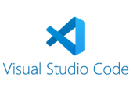

projects

voor verdere uitleg over
het spel master mind scrol dan
naar beneden.
voor verdere uitleg over
het project pink goose
scrol dan naar beneden


Mastermind is een denkspel voor twee spelers: de codemaker maakt een geheime code van 4 kleuren, en de codekraker probeert deze te raden.
Na elke gok geeft de codemaker feedback: Zwart pinnetje: juiste kleur op de juiste plek. Wit pinnetje: juiste kleur, verkeerde plek. De codekraker wint door de code te kraken binnen een aantal beurten!
pinkgoose
Het project Pink Goose is de start voor het vak Website,
hier leer je de programeer talen van HTML en CSS kennen.
Hier ervaar je veel van de manieren om jouw website te ontwikkelen,
ook zou je dit kunnen verwerken in toekomstige projecten,

dit is het programma waar wij deze
website in hebben gemaakt